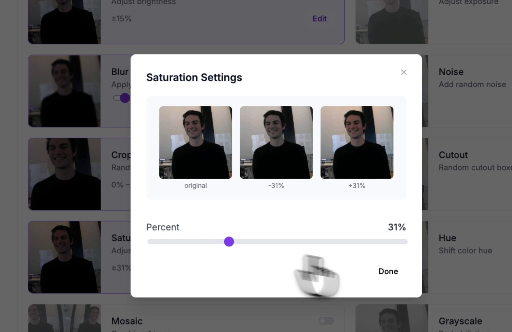
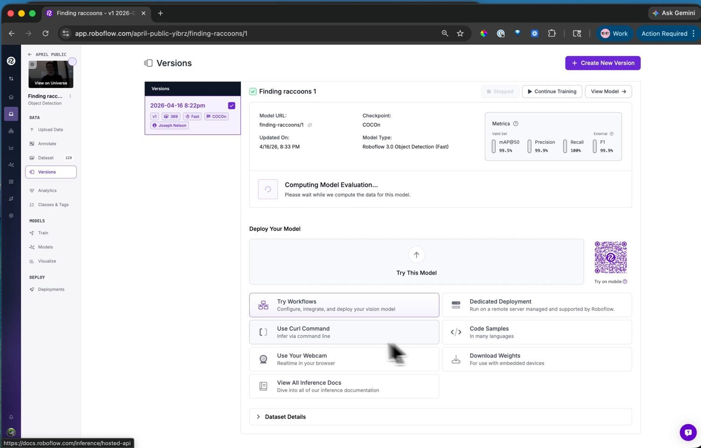

13.7.4. Antrenarea modelului¶
Cu un set de date etichetat la îndemână, antrenarea este un flux ghidat pe pagina Train: fixați o versiune a setului de date, alegeți o arhitectură și predați rularea serverelor Roboflow.
13.7.4.1. Versiunea setului de date¶
Înainte de antrenare, Roboflow construiește o versiune a setului de date – un instantaneu înghețat al imaginilor plus două transformări aplicate la intrare:
Preprocessing redimensionează fiecare imagine la rezoluția la care se antrenează modelul. Păstrați acea rezoluție mică: camera rulează modele mici, iar un detector antrenat la o rezoluție modestă se încadrează în memoria camerei și rulează rapid.
Augmentation sintetizează imagini de antrenare suplimentare prin perturbarea originalelor – răsturnări, deplasări de luminozitate și expunere, neclaritate, zgomot. Fiecare augmentare învață modelul să tolereze o variație reală pe care o va întâlni pe cameră, ceea ce extinde mult mai departe un set de date mic capturat manual.
{kind=link}

O previzualizare a augmentării: fiecare opțiune arată ce face unei imagini de exemplu înainte de a o aplica versiunii.¶
Potriviți augmentările cu variațiile pe care camera le va vedea efectiv. Luminozitatea și expunerea își merită locul – iluminarea se schimbă constant. Omiteți-le pe cele care nu se întâmplă niciodată în configurația dvs.; o cameră fixată într-un loc nu vede niciodată o răsturnare verticală, așa că augmentarea prin răsturnare doar diluează setul de date.
13.7.4.2. Alegerea unei arhitecturi¶
Apoi, alegeți arhitectura modelului. Roboflow oferă mai multe, fiecare cu un selector de dimensiune care echilibrează acuratețea cu viteza.

Alegerile de arhitectură – fiecare cu un selector de dimensiune care echilibrează acuratețea cu viteza de inferență.¶
Pentru cameră, alegeți Roboflow 3.0. Este YOLOv8 în spate, iar camera include un post-procesor YOLOv8 în ml.postprocessing.ultralytics, astfel încât ieșirea sa se decodează fără cod suplimentar de partea dvs. Alegeți dimensiunea Fast – se încadrează în memoria camerei și rulează la o rată de cadre utilizabilă.
13.7.4.3. Rularea antrenării¶
Porniți rularea, iar antrenarea are loc pe serverele Roboflow – de obicei mult sub o oră pentru un set de date mic, cu un e-mail când este gata. Pagina versiunii afișează apoi graficele de antrenare și metricile de acuratețe: mAP, precizie și recall.
{kind=link}

Modelul antrenat cu metricile sale de acuratețe. De aici, pagina Visualize îl rulează și pe imagini de test sau pe o cameră web pentru o verificare rapidă de bun-simț.¶
Dacă cifrele sunt bune, modelul este gata de implementare. Dacă nu, soluția este de obicei mai multe sau mai variate date – capturați un alt clip, etichetați-l și antrenați o versiune nouă.